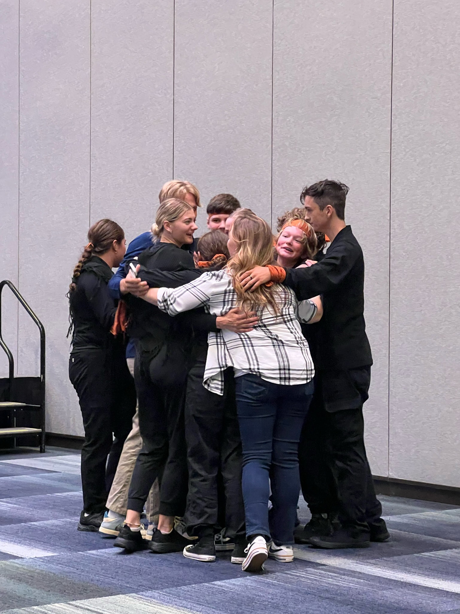

My most memorable season of life was when I went to the National Fine Arts Festival (all three times, but especially last year, 2023). It was fun presenting my pieces and hanging out with friends. Both of my teams got 2nd round callbacks, which I didn't expect. Our human video performance was especially fun to be in. Also, a friend and I made a card game at 3 in the morning and have been playtesting it ever since.
oh right, some memories:
also, please enjoy a small selection of images from 2023 that I prepared:
human video team after second round presentation
a based shirt in the art gallery
bourgeoise hotel omg whar
caleb getting a massage from the one and only thompson briggs
most of the girls getting stuck in one of the elevators. the firedepartment came shortly after.
the aforementioned fire truck
modern art moment

THE SIGN RETURNS
somehow tucker managed to look high here
???????????????????????????
cool art though
some movies or tv shows that were out during this time were Sounds of Freedom, One Piece, and the tail end of Don't Hug me I'm Scared (by which I mean I was finishing up season 2 during this time c: )
here's a link to page2!
© Isaiah W[redacted]